Old Screenshots
Here are very old screenshots of the past BasKet Note Pads releases.
Please remember that BasKet Note Pads is still under development, so these screenshots may not represent what the final release of BasKet Note Pads will look like.
Version 0.5.0
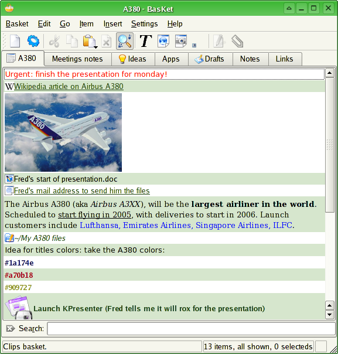 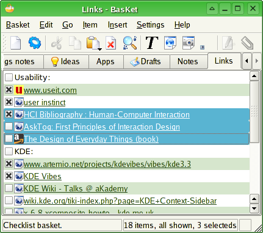
Version 0.5.0-alpha3
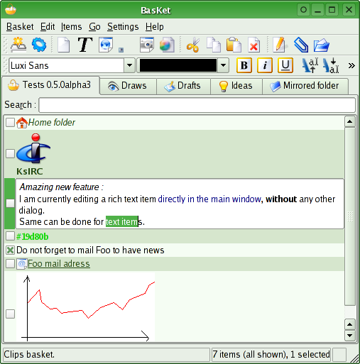
Version 0.5.0-alpha2
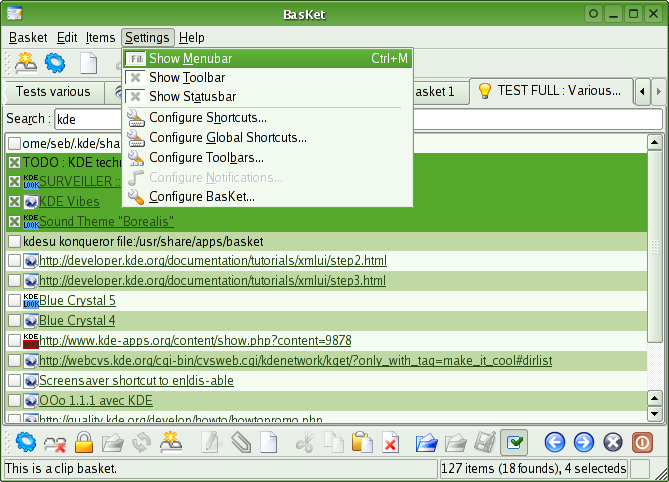
Version 0.4.0
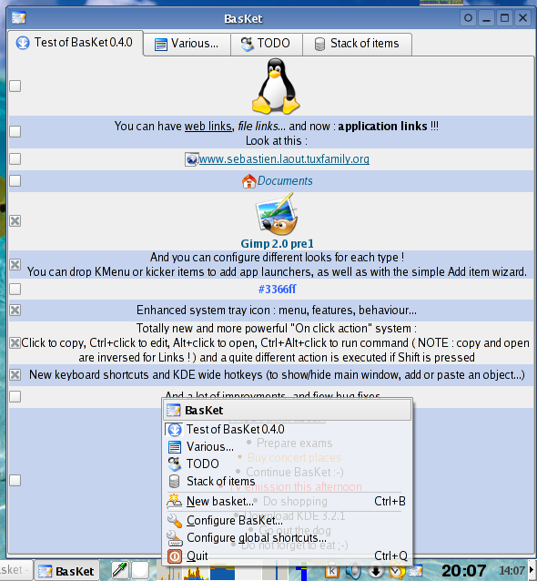
Version 0.3.3
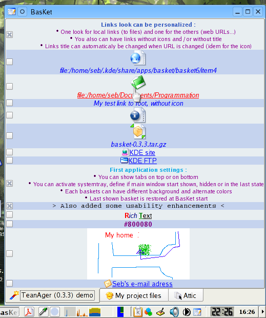
Version 0.3.2
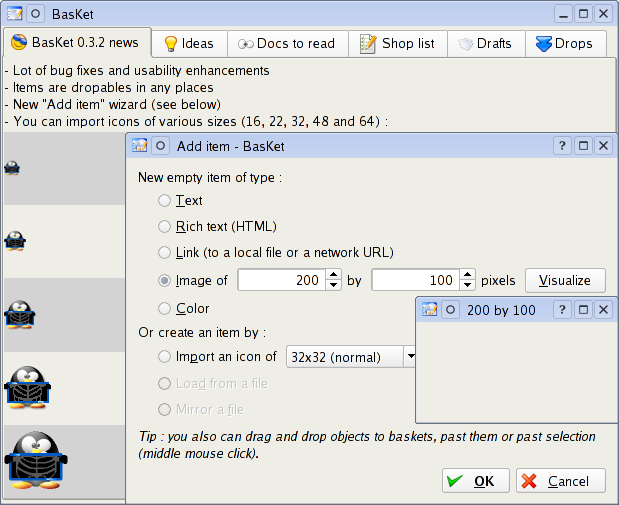
Version 0.3.1
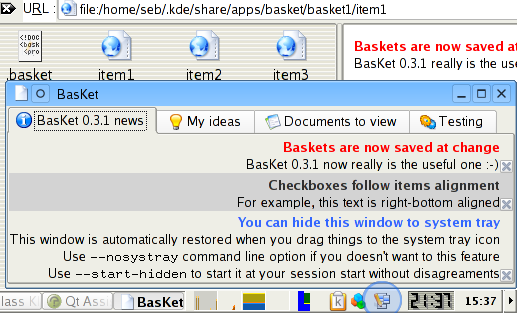
Version 0.3.0
The second screenshot is an assemblage of locked basket, HTML content item editor, and few context menus.
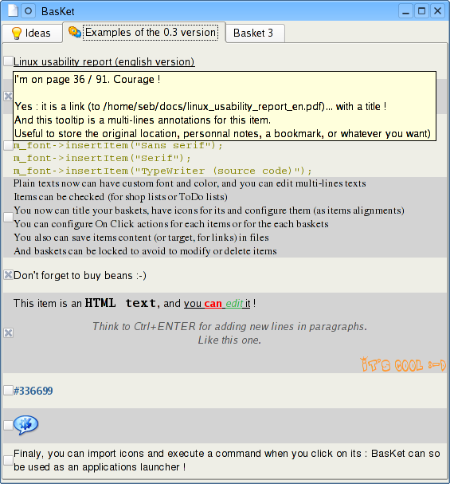
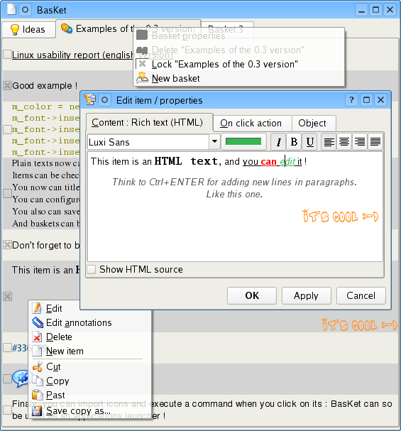
Version 0.2.0
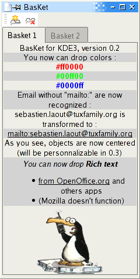
Version 0.1.0
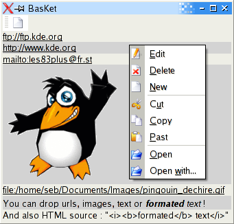 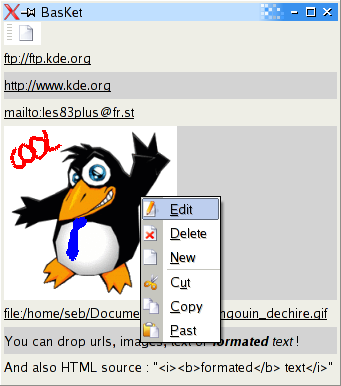
BasKet 0.2.0 on Slicker 0.1
I've tested BasKet 0.2.0 in a XEmbedCardApplet of Slicker 0.1 (unofficial version) and it seems good !
I will use Slicker for the tabbed baskets (but certainly not before version 2.0 : the actual system tray icon has become very powerful). This will not have a toolbar and only one basket per card may be authorized to remove the tabs (Slicker will manage the "tabs" better than BasKet in this case).
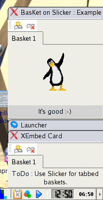